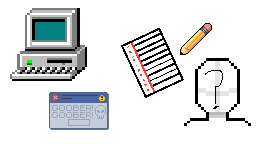

Taksha Patel
NOTE: This is a expirimental blog page

Yesterday, I decided to redesign my portfolio website to make it more modern and visually appealing.
I thought of using GenAI, because according to social media, "claude just killed coding". It was wrong.
Side rant: It turns out that GenAI is a bubble, sure its usefull for certain tasks such as debugging, but when you look at the corporations that have profited from it, you realize its only Nvida. GenAI is like the gold rush, and Nvidia are the shovel sellers. Anthropic and OpenAI only give you good models if you pay, which, me personally, I'd rather spend 5 years of my life on a manual hype train then just pay the subscription fee. In the end I learned that you only get what you want if you tell the computer directly, no need for some fancy tokenizer or tensor calculus, just code.
The original portfolio website was very simple, just a floating widgets, with 39px border radius, explaining who I am, my projects, and my contact infomration
Later on, I added a terminal UI to it, where it would look like your in the terminal while exploring my site
I gave the code to codex, to see if it could make the site look more modern, because it was very simple as it was. That was a mistake.
The site was un-saveable, I couldnt tell codex to roll back because I was on free tier. So I asked OpenCode to fix it, it made it saveable, but it still sucked.
I decided to edit the code manually, that way I did not have to worry about GenAI messing things up again, with manual editing, it allowed me to do EXACTLY what I want to do with my site.
I got the floating glass-morphic dock idea from palantir, which they probably got that idea from Liquid Glass, but I dont really care as long as it looks good.
I think the site looks to professional, it looks more like a resume, then a personal site to show off my projects